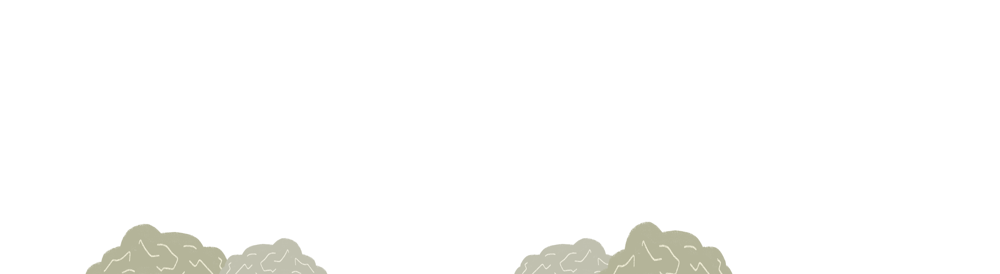

Projet scrollytelling créé dans le cadre du cours Optimisation Web - Intégration multimédia - Collège Montmorency. © 2024 - Conception : Delphine Grenier et Kenza ElHarrif| Développement Web : Delphine Grenier.